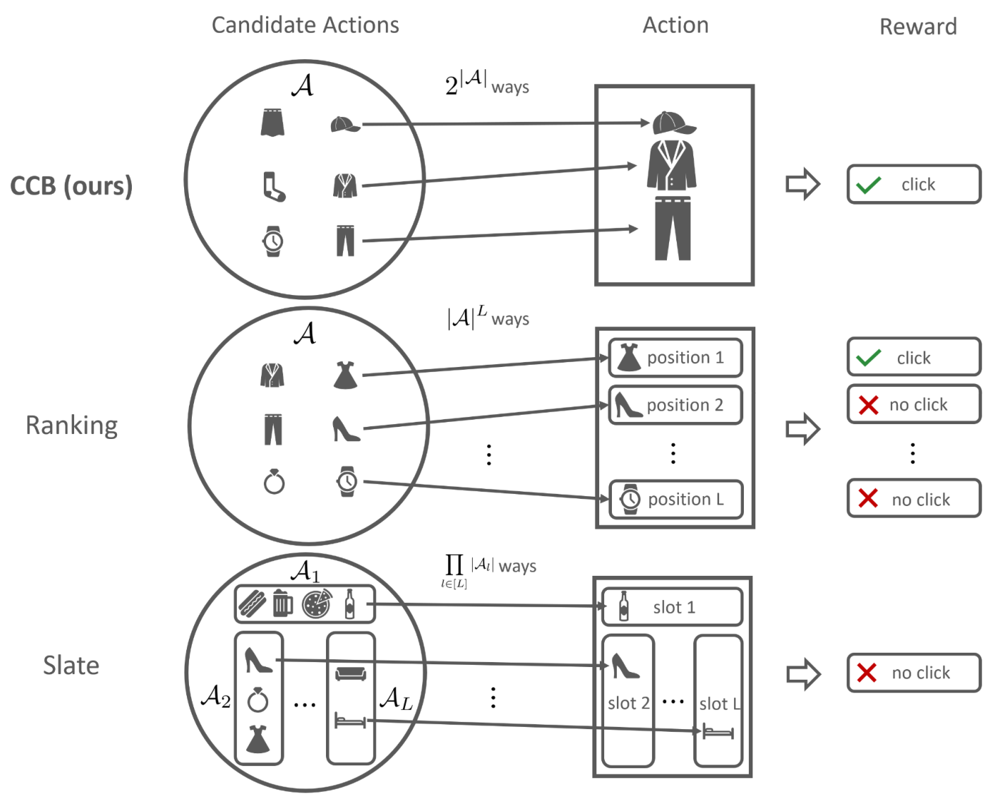

Effective Off-Policy Evaluation and Learning in Contextual Combinatorial Bandits (上下文组合赌博机中的有效离线策略评估与学习)
- 会议/期刊: RecSys 2024
- 作者与机构: Tatsuhiro Shimizu (Independent Researcher)、Koichi Tanaka (Keio Univ.)、Ren Kishimoto (Tokyo Tech)、Haruka Kiyohara / Yuta Saito (Cornell)、Masahiro Nomura (CyberAgent)
- 推荐链路定位: 重排 / 列表级子集选择（离线评估与策略学习层）
- 研究方向: 强化学习与动态探索推荐 / 多任务学习与列表级重排
- 论文原文: arXiv:2408.11202
- 开源代码: 暂未开源
TL;DR (1分钟核心速览)
上下文组合赌博机 (CCB) 的策略要从 \(|\mathcal{A}|\)个候选中挑出一个子集，子集空间\(2^{|\mathcal{A}|}\)指数膨胀，导致 DM 因未观测子集过多而高偏差、IPS/DR 因子集级重要性权重爆炸而高方差——这一点在现有 OPE 文献中完全空白。作者提出因子化动作空间，把子集拆成二值指示向量，将期望奖励分解为"主动作主效应 + 补充动作残差效应"，据此构造 OPCB：主效应用边缘化重要性采样无偏估计，残差用回归低方差兜底。KuaiRec 与小样本 (\(n=500\)) 合成数据上 MSE 较 IPS/DR 分别降 92%/86%，OPCB-PG 在\(|\mathcal{A}|=10\) 时策略值超 DR-PG 约 25%。
Background & Motivation (背景与核心矛盾)
- 主流范式: 单动作上下文赌博机的 OPE 已成熟（DM / IPS / DR / OffCEM），ranking OPE 与 slate OPE 也已有专门估计器。
- 前人局限: ① ranking OPE 依赖位置级奖励 \((r_1,\dots,r_L)\)，而 CCB 只能观测到子集级标量奖励\(r\)，估计器无法直接套用；slate OPE 每个槽位有独立动作空间\(\mathcal{A}_l\)，CCB 只有单一共享\(\mathcal{A}\)。② DM 对未在日志中出现的子集无覆盖能力（偏差大），IPS/DR 在\(\mathcal{S}\)上做重要性加权，权重随\(|\mathcal{A}|\)指数爆炸（方差大），\(|\mathcal{A}|=10\) 时子集数已达 1024。
- 核心洞察 (Key Insight): 实际业务中奖励几乎由少数关键动作主导（如感冒药+退烧药决定疗效，配饰只微调整体搭配收益），因此无需在整个子集空间上纠偏，只需对"主动作"纠偏；同一主动作集合下不同子集之间的奖励差值远比绝对奖励容易回归。
- 本文切入点: 用因子化动作空间显式区分主效应与残差效应，把 IPS 的方差与 DM 的偏差各取所需地"分而治之"。

Method (核心方法设计)
1. 整体框架 (Overall Architecture)
输入是以 \(x\)为条件、由日志策略\(\pi_0\)采集的\((x_i,s_i,r_i)\)。模型先把子集\(s\)编码为二值指示向量\(m\)，并分解\(\mathcal{S}=\prod_{l=1}^{L}\{\emptyset,a_l\}\)；再由主动作抽取函数\(\phi(m)\)划出"主动作 / 补充动作"两路：主动作路走边缘化重要性采样得到无偏主效应，补充动作路走两阶段回归得到低方差残差效应，二者相加成 OPCB 估计值。训练分两步：先用同主动作对做 pairwise 回归对齐相对奖励差（压偏差），再做普通回归对齐绝对奖励（压方差）；\(\phi\) 本身用"估计 MSE 最小"在候选集上搜索得到。推理时可按式 (8) 转成策略梯度 OPCB-PG 直接学新策略。
flowchart TD
A["日志数据 (x, m, r) ~ pi_0"] --> B["因子化动作空间 m in prod{ø,a_l}"]
B --> C["主动作抽取 phi(m) 搜索"]
C --> D["主效应: 边缘化 IS 权重 w(x,phi(m))"]
C --> E["残差效应: 两阶段回归 f_hat"]
D --> F["OPCB 估计值 / OPCB-PG 梯度"]
E --> F2. 关键设计拆解 (Key Designs)
-
因子化动作空间与奖励分解（把指数空间切片）: 痛点是把子集当原子动作，纠偏范围无法收缩。本文令 \(m\in\mathcal{M}=\prod_{l=1}^{L}\{\emptyset,a_l\}\)，并写下非假设性恒等分解 \(q(x,m)=g\big(x,\phi(m)\big)+h(x,m)\)， 其中 \(g\)为仅依赖主动作集合的主效应、\(h\)为残差。由于是恒等变形而非建模假设，任何真实奖励都成立，只是"主效应占比\(\lambda\)越大、\(h\) 越平滑，估计越准"。
-
OPCB 估计器（主路 IS + 残差路回归）: 仅对主动作构造边缘化权重 \(w(x,\phi(m))=\pi(\phi(m)|x)/\pi_0(\phi(m)|x)\)， \(\hat{V}_{\text{OPCB}}=\frac{1}{n}\sum_{i=1}^{n}\Big[w(x_i,\phi(m_i))\big(r_i-\hat{f}(x_i,m_i)\big)+\mathbb{E}_{\pi(m|x_i)}[\hat{f}(x_i,m)]\Big]\)。 定理 3.3 给出仅需"主动作公共支撑 + 条件成对正确性"(\(\phi(m)=\phi(m')\Rightarrow\Delta q=\Delta\hat{f}\)) 即无偏；定理 3.4 把残余偏差拆成三因子（日志策略在给定\(\phi\)下的随机性、补充动作上的分布偏移、\(\hat{f}\)的相对差误差），定理 3.5 证明方差只由\(w(x,\phi(m))\) 的尺度决定——这正是相对 IPS/DR 方差大降的机理。
-
两阶段回归、主动作搜索与 OPCB-PG: 偏差项要求 \(\hat{h}_\psi\)对齐相对差，故在\(\mathcal{D}_{\text{pair}}=\{(x,m,m')\mid x\ \text{同},\ \phi(m)=\phi(m')\}\)上最小化\(\ell_h(r_m-r_{m'},\hat{h}_\psi(x,m)-\hat{h}_\psi(x,m'))\)；方差项要求对齐绝对奖励，再以\(\hat{g}_\theta\)拟合残差\(r-\hat{h}_{\psi^*}\)。\(\phi\)通过\(\hat\phi=\arg\min_{\phi\in\Phi}\widehat{\text{Bias}}^2+\widehat{\text{Var}}\)在 30 个候选中随机搜索。策略学习用\(\nabla_\zeta\hat{V}_{\text{OPCB}}\)（式 8），即主动作权重乘\((r_i-\hat{f})\)的 log 梯度加回归项的期望梯度。无需负采样（离线日志驱动），但期望项\(\mathbb{E}_{\pi(m|x)}\)需枚举子集，\(|\mathcal{A}|=10\) 时为 1024 次前向。
Experimental Setup & Evaluation Protocol (实验设置与评估协议)
- 数据集与预处理:
| 数据集 | #Users | #Items / #Actions | #Interactions | 密度 | 说明 |
|---|---|---|---|---|---|
| Synthetic | 200 | \(\|\mathcal{A}\|=6\sim10\)(子集 64→1024) | \(n=500\sim8000\) | — | 5 维标准正态 context，\(\lambda=0.8\)、\(\sigma=3.0\)、\(\beta=-0.5\)、\(\epsilon=0.2\) |
| KuaiRec (dense) | 1,411 | 3,327 videos | ≈4.69M | ≈100% | 全观测子矩阵，特征作 \(x\)/ 动作特征；\(\beta=-0.3\)、\(\epsilon=0.1\)，偏差估计噪声\(\sigma\in\{1,3,5\}\) |
- 数据划分与防穿越: 无训练/测试比例划分，而是日志策略 \(\pi_0\)采样模拟——按\(n\)抽 i.i.d. 日志，另生成独立测试集评估真实\(V(\pi)\)；合成与真实数据都以"已知/可访问的\(q(x,m)\)"作为 ground-truth，故无穿越风险。
- 排名评测协议: 非 Full-Ranking / Sampled Ranking，而是 OPE 标准指标 MSE = Squared Bias + Variance，100 个随机种子取均值；子集奖励由 \(q(x,m)\)加\(\mathcal{N}(0,3^2)\) 噪声采样得到（KuaiRec 用各视频观看比的乘积均值合成子集奖励）。
- 对比基线与超参: DM / IPS / DR 三类经典估计器 + OPCB 三个变体（
true用真实 \(\phi\)、best用真实 MSE 选\(\phi\)、ours用数据驱动估计 MSE）；回归器统一 3 层 MLP，OPL 侧对比 IPS-PG / DR-PG / Reg-based。
Key Experimental Results (实验关键数据)
1. 主实验对比 (Main Results)
下表为按原文图 2–图 7 归一化后的近似读数（OPCB(ours) = 1.00，越小越好；原文未给出数值表）：
| 配置 (指标: 相对 MSE) | DM | IPS | DR | OPCB(true) | OPCB(best) | OPCB(ours) | Improv. |
|---|---|---|---|---|---|---|---|
| Synthetic, \(n=500\) | ≈9.5 | ≈12.5 | ≈7.1 | ≈1.30 | ≈0.85 | 1.00 | 86% (vs DR) |
| Synthetic, \(n=2000\) | ≈6.0 | ≈4.0 | ≈2.8 | ≈1.15 | ≈0.80 | 1.00 | ≈64% |
| Synthetic, \(n=8000\) | ≈4.5 | ≈1.8 | ≈1.4 | ≈1.05 | ≈0.88 | 1.00 | ≈29% |
| Synthetic, \(\|\mathcal{A}\|=10\)(\(n=2000\)) | ≈11 | ≈26 | ≈13 | ≈1.2 | ≈0.8 | 1.00 | ≈92% |
| KuaiRec, \(n=2000\) | ≈5.0 | ≈7.0 | ≈4.5 | ≈1.2 | ≈0.9 | 1.00 | ≈78% |
| KuaiRec, \(\sigma_{\text{bias}}=5.0\) | ≈4.8 | ≈6.5 | ≈4.2 | ≈1.25 | ≈0.95 | 1.00 | ≈76% |
2. 消融实验 (Ablation Study)
| 变体 | Squared Bias | Variance | 相对 MSE | 归因 |
|---|---|---|---|---|
OPCB(ours), \(K=\|\hat\phi\|\) |
基准 | 基准 | 1.00 | 数据驱动\(\phi\)，30 候选随机搜索 |
OPCB(true)，\(\phi=\phi_{\text{true}},K=3\) |
↑ | ↓ | ≈1.15 | 用真值主动作并非最优分解 |
OPCB(best)，真实 MSE 选 \(\phi\) |
↓↓ | ↑ | ≈0.85 | 故意多用主动作换偏差下降 |
| 去掉 pairwise 回归（单阶段） | ↑↑ | ↑ | ↑ | 相对奖励差未被对齐，触发定理 3.4 因子 (iii) |
| \(K=1\)（主效应覆盖不足） | ↑↑ | ↓↓ | ↑ | 残差过大，回归兜不住 |
| \(K=5>K_{\text{true}}=3\) | ↓ | ↑ | 先降后升 | 图 5 偏差–方差权衡曲线 |
3. 关键实验发现 (Key Findings)
- 小样本场景收益最大: \(n=500\)时 OPCB 的 MSE 比 IPS 降 92%、比 DR 降 86%，且随\(n\) 增大与基线收敛——说明其价值在于"日志稀缺 + 动作空间爆炸"这一真实推荐场景，而非大样本稳态。
- 子集空间越大优势越显著: \(|\mathcal{A}|\)从 6 增到 10（子集 64→1024）时 IPS/DR 因整个子集上的权重爆炸迅速失效，而 OPCB 权重只依赖主动作；同样的低方差红利传导到 OPL，\(|\mathcal{A}|=10\) 时 OPCB-PG 策略值超次优 DR-PG 约 25%。
- "真值分解"不等于"最优估计":
OPCB(best)一致优于OPCB(true)，且 \(K>K_{\text{true}}\)时 MSE 反而更低（图 5）——说明主动作集应作为估计器的方差–偏差旋钮来调，而非去拟合生成过程；同时\(\lambda\) 越大（主效应越主导）OPCB 相对优势越强，印证分解前提。
Highlights & Limitations (亮点、对比与审稿批判)
- 与代表作对比 (vs. Prior Work): 与 OffCEM (Saito et al. 2024) 相比，本文并非简单移植：OffCEM 只处理单动作大动作空间，本文必须先构造因子化子集空间才能定义"主动作"分解，且额外给出数据驱动 \(\phi\) 选择与 OPL 扩展；与 ranking OPE 相比，本文不依赖位置级奖励；与 slate OPE 相比，本文处理共享单一动作空间而非分槽独立空间。
- 可迁移亮点: ① "主效应 IS + 残差回归"可作为通用插件迁移到任何大组合空间的 off-policy 纠偏（如多品类捆绑、优惠券组合、多目标打包推荐）；② "用更多主动作换偏差、用回归换方差"的旋钮思想，可指导 OPE 估计器在线上小流量下的方差预算分配。
- 审稿级局限批判: ① 实验只在 \(|\mathcal{A}|\le10\)上验证（作者自承），而真实电商候选动辄上千，\(\mathbb{E}_{\pi(m|x)}\)的子集枚举与\(\phi\)搜索成本会直接压垮在线可用性；② KuaiRec 实验的子集奖励仍由逐物品奖励乘积合成，真实子集奖励的交叉/替代效应（如互补品与替代品的非可加性）未被检验，导致分解前提在业务中可能被高估；③ 主动作选择依赖 MSE 的估计量（含\(\delta_\phi\) 噪声），随机搜索 30 个候选的稳定性与候选集设计缺少敏感性分析。
Rating (四维评分)
- 方法创新性 (Novelty): ⭐⭐⭐⭐ （首次形式化 CCB 的 OPE/L，因子化动作空间 + 主/残差分解是有理论支撑的真增量，但分解精神延续 OffCEM）
- 评估协议与实验扎实度 (Protocol & Experiments): ⭐⭐⭐⭐ （100 seed、MSE 拆解到 Bias²/Var、合成+KuaiRec 双验证、OPE 与 OPL 双任务齐备；扣分在于主结果全以图呈现、无表格与显著性检验，\(|\mathcal{A}|\le10\) 规模偏小）
- 写作与数学规范度 (Clarity & Rigor): ⭐⭐⭐⭐⭐ （分解为恒等式而非假设、定理 3.3–3.5 给出无偏性条件、偏差三因子与方差表达式清晰可解释，理论—算法—实验闭环）
- 工业落地与复现价值 (Industrial & Practical Value): ⭐⭐⭐ （思路对推荐重排/打包场景极有吸引力，但子集枚举与 \(\phi\) 搜索开销、无开源代码，短期更适合离线评估而非线上实时决策）